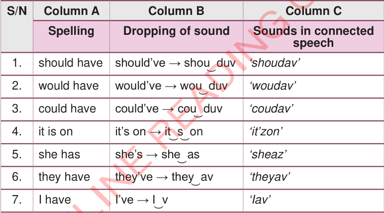

(b)Practise pronouncing phrases in connected speech by deleting some sounds.

| S/N | Column A | Column B | Column C |
|---|---|---|---|
| Spelling | Dropping of sound | Sounds in connected speech | |
| 1. | should have | should’ve → shou͜ duv | ‘shoudav’ |
| 2. | would have | would’ve → wou͜ duv | ‘woudav’ |
| 3. | could have | could’ve → cou͜ duv | ‘coudav’ |
| 4. | it is on | it’s on → it͜ s͜ on | ‘it’zon’ |
| 5. | she has | she’s → she͜ as | ‘sheaz’ |
| 6. | they have | they’ve → they͜ av | ‘theyav’ |
| 7. | I have | I’ve → I͜ v | ‘Iav’ |